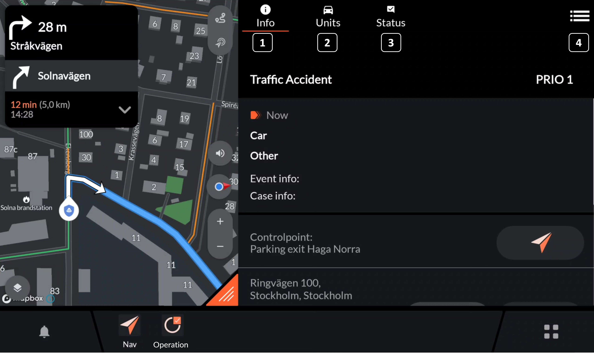
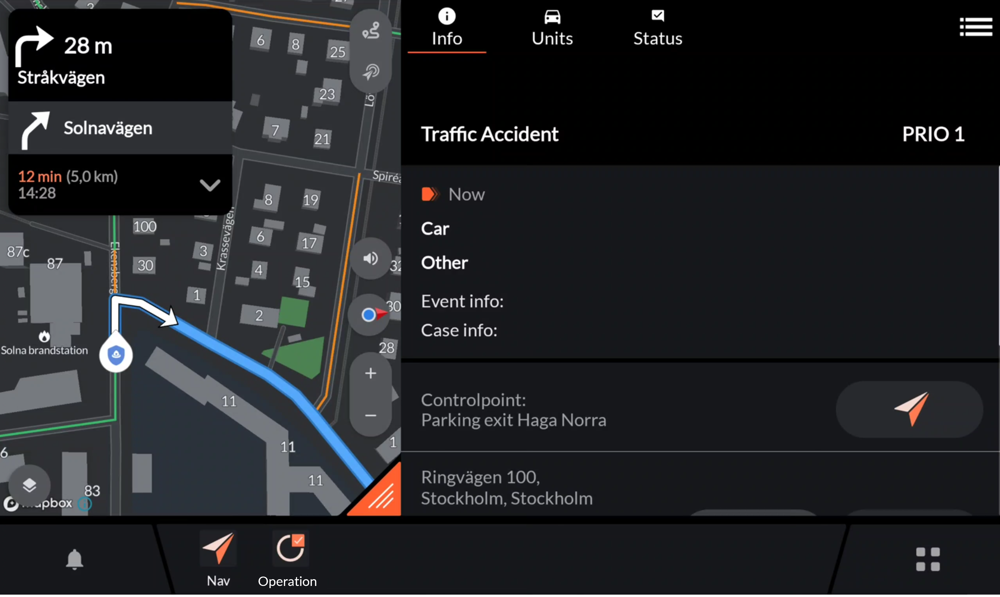
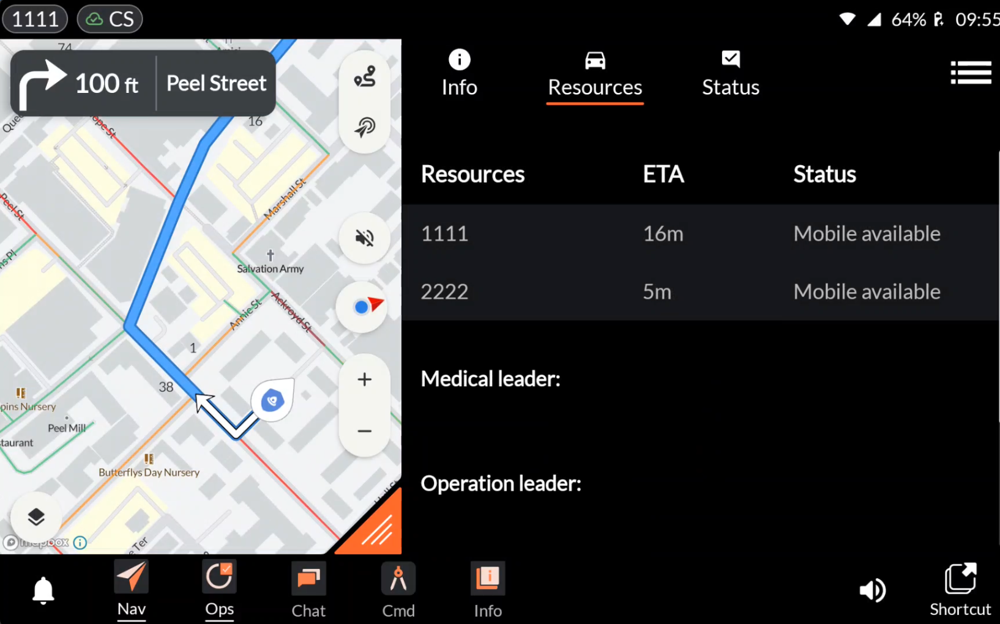
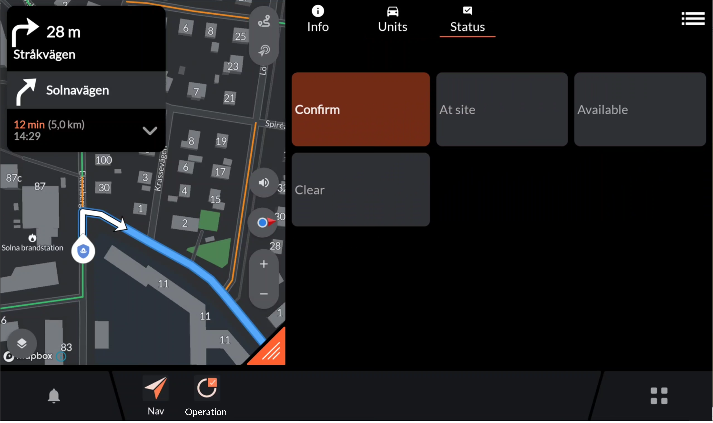
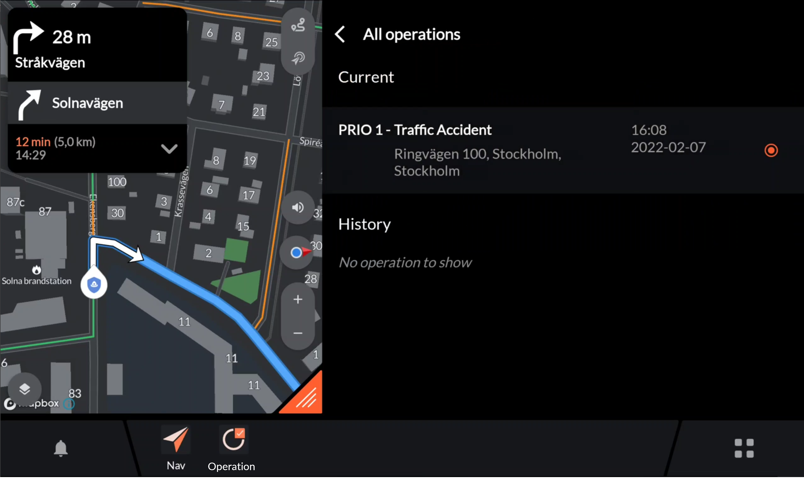
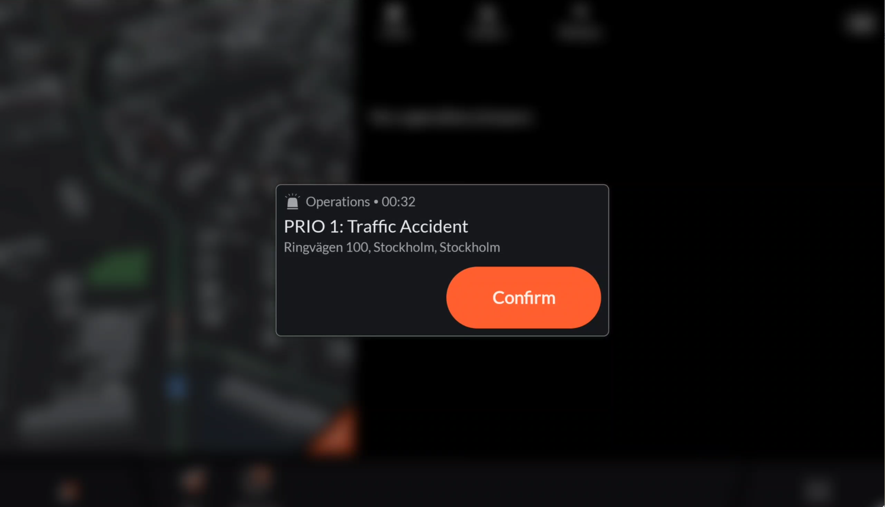

Application: Operation¶
Developer: Evam
Availability: World-wide
Description: Your incident is our mission. As a spider in the web the Operation app sits at the center and handles your incident. Integrated with the dispatch central it gives you the information that you need. In the way you want it.
User instructions¶
The operations app handles the full incident and integrates with your dispatch central. The Operations app includes the following tabs:

Info
Units/Resources
Status
All operations
Info¶

In the “Info” tab, you’ll access comprehensive details about ongoing incidents, including but not limited to:
Incident Overview: Gain insights into pertinent information regarding the incident.
Address Details: Explore the address associated with the incident location. Easily navigate the surroundings by pressing the “Destination Overview” button.
Assigned Radio Group: Identify and change to the assigned radio group (for installations with Tetra radio connected to Evam Vehicle Services only).
Other: All other information that is sent from the dispatcher is also displayed for the user depending on the case type.
Resources¶

In the resources tab the resources mobilised to the same incident are displayed. If the other resources are also equipped with the Evam platform the Estimated Time of Arrival (ETA) and current status is also displayed.
Status:¶

In the status tab the available statuses are shown. The view is fully configurable as part of the settings. Pressing the status will send the status. The current status is indicated by having a orange background compared to status not engaged having a grey background.
All operations:¶

The “All operations” tab shows the current incidents. You may handle several incidents simultaneously, however, only one incident can be active at a time. In the “All operations” tab you select the incident that should be active if there are multiple ones available. If only one incident is available that incident will be activated by default.
Furthermore, data from historic incidents are shown. Previous incidents are stored under “History” for 24h before they are automatically removed.
Confirming an incident:¶

Confirming a incident is made through accepting the notification which is shown when an incident is received or through activating the incident from the “All operations” tab. Once a incident is activated it can be tied to automatically conduct the following operations:
Confirm the incident towards the dispatcher
Start navigation to the incident destination and/or assigned breakpoint
Change to the assigned talk group (For installations with Tetra radio connected to Evam Vehicle Services only)
Any other predefined action in the Tetra network (For installations with Tetra radio connected to Evam Vehicle Services only)
Change the base map and/or add/remove any map layer
Dismissing a incident:¶
To dismiss an incident, simply tap “Dismiss” in the top-right corner of the incident notification. Once dismissed, the incident will be available in the “All operations” tab and can be activated later if needed.
FAQ:¶
How do I confirm a incident?
Confirming a incident is made through accepting the notification which is shown when an incident is received or through activating the case from the “All operations” tab.
I have received an incident that I don’t want to accept. How do I remove the notification and dismiss the incident?
To dismiss an incident, simply tap “Dismiss” in the top-right corner of the incident notification. Once dismissed, the incident will be available in the “All operations” tab and can be activated later if needed.
I want to see my current status. How do I do that?
To view your current status, you can either look in the “Status tab” of the Operations app or preferably under “Current status” in the shortcut center.
How do I change my status most easily?
You can easily change your status through the notification that appears on the screen, suggesting a status based on your organization’s status configuration. You can also change to the suggested status in the Shortcut center. Press the suggested status to move directly to the next status.
You can also switch to any status in the Operations app “Status tab”. For example, if the suggested upcoming status is not relevant.
I have no connection the Tetra Radio
If you have no connection to the Tetra radio please try the following to resolve the problem:
Confirm that the PEI-cable between the Radio and the device is intact and connected to the Radio’s active PEI-port.
Try to reboot your Tetra radio.
Confirm that the correct radio type/brand is configured as part of your vehicle settings.
If any of the above did not solve your problem. Please contact support@evam.life
I cannot change talk group from the operations app – Motorola radio
For the operations app to be able to change talk group on the Motorola radio you must ensure that the talk group that you want to change to is in a talk group list with the subscriber configuration. This needs to be done via the Motorola tool “Customer Programming Software” (CPS) or through your Motorola distributor.
I cannot change talk group from the operations app – Airbus radio
For the operations app to be able to change the talk group of your Airbus radio you must program the radio so that all available talk groups are situated in the same talk group folder. Furthermore, your radio configuration in vehicle services must include a pointer to the talk group folder ID#. Contact support@evam.life to setup your configuration appropriately.
I cannot receive any incidents from my dispatch central
Attention
The answer provided is related to dispatched received from Swedish SOS Alarm.
To receive incidents in the operations app you must ensure that the following configuration is made for your organization at SOS Alarm:
Sending profile:
Fire and rescue: 10200 is recommended. However, the following sending profiles are also supported by the operations app: 10020, 10021, 10024, 10026.
Ambulance: 10036 needs to be selected.
Format template:
In all cases format template 21 must be configured.
Configuration¶
Statuses
A status can be configured with the following fields:
Name: The displayed name
Event: A event at which the status should become recommended. The available events are: At home station, Exit home station, At site, Exit Site, At Breakpoint, Exit Breakpoint, At Hospital and Exit Hospital.
Tetra Actions: The actions in the tetra network e.g. sending a status. Multiple actions may be configured as part of one status.
Start status: Defines if the status is to be engaged when an operation starts, used for status recommendation as well as automatically sent when accepting a case
End status: Defines if the status being engaged means the operations ends.
Successor name: What status should typically come after this one, used for status recommendation.
Notification: Whether or not the operations app should notify the user with a notification when this status is recommended
Incident Priority
The available priorities for an active case may be configured. E.g. Prio 1, Prio 2, Prio 3 etc.
A priority can be configured with the following fields:
Name: The display name
Tetra actions: The actions in the tetra network e.g. sending a status. Multiple actions may be configured as part of one priority.
Button style Day: The color of the priority button in day-mode
Button night Day: The color of the priority button in night-mode
Share vehicle position
How the vehicle position is shared between units is configurable. The options are the following:
No position sharing
By organization: Share the position to other vehicles in the same organization
By case: Share the position to other vehicles assigned to the same case as the vehicle.
“By organization” and “By case” may be enabled simultaneously.